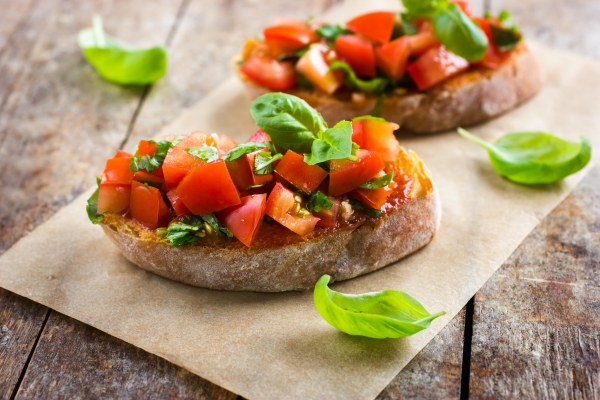

Bruschetta
Home

Description :
La bruschetta [bʁus.ke.ta] est une préparation culinaire traditionnelle d'antipasti (apéritif ou hors-d'œuvre) italienne, issue du besoin des agriculteurs de conserver le pain, typique de la cuisine italienne
Ingrédients :
- Sel
- Tomates
- Pain
- Huile d'olive
- Ail
Étapes
- Découper les tomates en petits dés après avoir retiré la partie verte en haut, les mettre dans un petit saladier avec une bonne huile d'olive et du sel.
- Faire griller les tranches de pain de campagne, puis les frotter d'ail.
- Disposer le mélange tomate/huile d'olive généreusement sur la tartine, à déguster aussitôt (tiède).
- Bon appétit